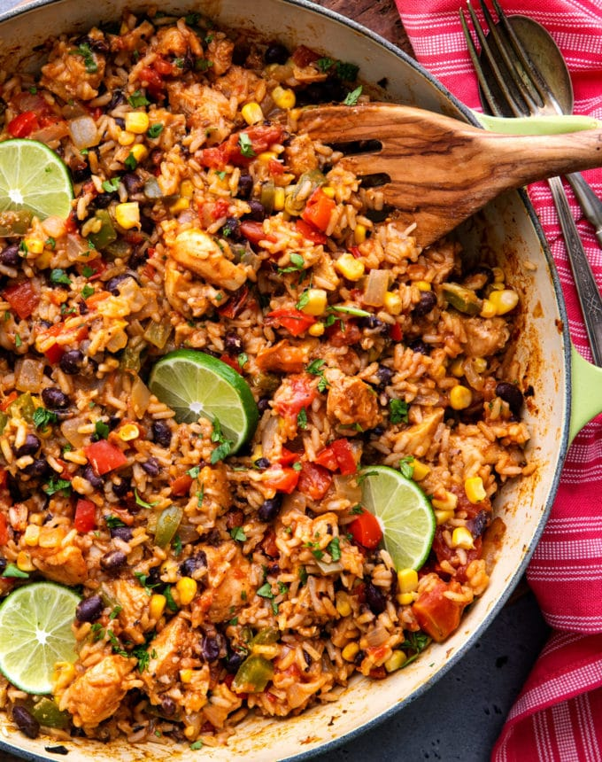

Mexican Chicken and Rice

Description
Are you itching to taste some mexican food with the comfort of eating rice? Well I have just
the thing for you! Introducing Mexican Chicken and Rice! This savory and umami filled
dish will make you do the cha-cha on every mouthful and the best part is it is very healthy and easy to make!
Boasting tons of protein, this dish is perfect for those who need to get their energy running and building back
up muscles to continue their gym grind. If this sounds like you this is the perfect recipes!
Ingredients
2-3 chicken breasts
garlic powder
paprika
cumin
oregano
chili powder
salt
1/2 squeeze lime juice
chopped onion
chopped bell peppers
can of black beans
washed rice
green onion
coriander
water based on rice and chicken amounts
can of chopped tomatoes
Steps
- Prepare chicken by cutting into pieces and seasoning/marinating
- Prepare onions and bell peppers by dicing
- Cook chicken on low heat and once dry enough add the onions, bell peppers, and beans
- Stir well till mixed fully and season as needed on medium heat
- Once stirred well, then add uncooked washed rice to toast including a blend of the spices used over top
- Stir till spices meld well with rice and light coloring occurs (on medium heat go lighter be careful of burning)
- Once stirred a couple of times, then put 3/4 cup of water or more based on the scaling of how much rice and chicken you have
- Cover for 12+ minutes based on amount of water put and food used
- Once dried and rice is a nice color orange and isn't soggy it should be done
- Enjoy!!!! :D
Home